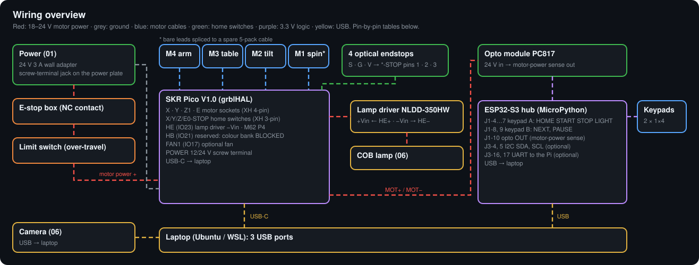

Inside OpenGonio
Everything that makes the machine work, opened up: the control app running in your browser, every software module
and the tests that check it, the firmware on both boards, every wire and the whole plan from first print to release. All of it is
read from the repository's own files by tools/inside_data.py, so this page changes when the code does.
Design stage: the software runs and is tested on a simulated machine; no OpenGonio has been built or measured yet.
Control app, live
The same app a builder opens with opengonio app, here running the real Python in your browser
(Pyodide, Python compiled to WebAssembly) against the simulated machine. Every number on it comes from the software.

Try this
- Choose a material and Connect to the simulator.
- Home all: the simulated motors run to their switches.
- Run capture with the mirror sweep: 33 photos, then the software checks the run (verify) and draws the curve.
- The peak sits 0.4° from where it should: the simulator hid that error in the table, and the run finds it. Calibration removes it.
- Move the sliders: the app checks every pose for collisions before it moves.
How the web version works
- app.js
- browser.js
- worker.js (Pyodide)
server.respond()- simulated machine
On a laptop the same respond() answers over HTTP. Here a web worker answers instead; nothing talks to hardware.
Everywhere else
- Desktop: Windows, macOS and Linux apps from the GitHub releases (PyInstaller,
software/packaging/). - Phones and tablets:
opengonio app --lan, scan the QR code under Phone; add it to the home screen. - Data: every run downloads as a zip from the run list.
- On the machine: the optional status screen on the hub, independent of any app.
How the pieces fit
A laptop (or a Raspberry Pi Zero, stage 15) runs the software. It talks over USB to two small boards: the SKR Pico moves the four motors and switches the lamp, and the ESP32-S3 hub reads the keys, the e-stop sense and the sensors. The camera is on USB too.

Laptop software
Python: plans, motion, camera, checks, calibration, fitting, 3D scans.
Modules →Two firmwares
grblHAL on the SKR Pico; MicroPython on the hub.
Settings and commands →Wiring
One source file, drawn as bench walkthroughs with a test after each group.
Wires →Project map
Every file as a clickable map, with a plain-words tour.
Open the map →Software
The opengonio Python package. Open a module to see what it does, its public functions and classes (each
links to its line on GitHub), what it uses, what uses it and which test files check it.
Build and check tools
The repository writes its own README tables, diagrams, website numbers and paper figures from a few source files, then checks they agree.
Tests
They run with make test and on every push to GitHub, against the simulated machine.
The simulated test bench
A virtual machine with the real geometry, a camera model and known materials. It hides a 0.4° error in the table so calibration has something to find.
- plan poses
- move and photograph
- verify the run
- calibrate
- reflectance curve
- fit a material
Try it: make sim, or the control app above. Its real outputs are on the website.
The bench tests on the machine
checks across the stages, each a measurable pass (a voltage, a key printing its name, a motor returning to its mark). They run as you build: see the roadmap and the wiring walkthroughs.
Firmware
Two boards, two firmwares, one USB cable each. Read straight from firmware/.
SKR Pico · grblHAL
BTT SKR Pico V1.0 (RP2040, 4 × TMC2209). Moves the four axes in degrees, homes each to its switch, switches the lamp and fan. Settings from firmware/grblhal/settings.txt, sent with bash scripts/controller.sh settings.
General settings
ESP32-S3 hub · MicroPython
Pins (GPIO)grey rows are reserved and stay unwired
I2C devices
Wiring
Every wire lives in docs/wiring.yaml. The build turns it into the README tables, these diagrams and three
bench walkthroughs that draw one wire at a time, with a test after each group. make check compares the hub pins with the firmware.

Order: power → controller → machine. Every wire, one per page: wiring guide.
Roadmap
Eighteen stages, each ending with checks before the next starts. Open a stage for its milestones, steps and the pass for each step.